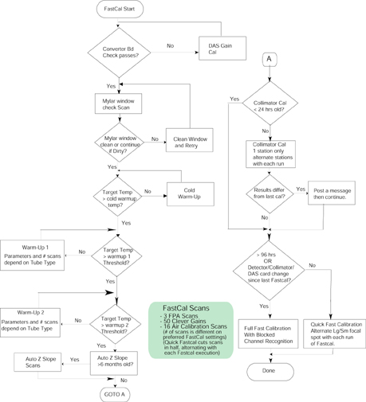

GEMS Proprietary Class: A
Direction 5117807-800, Rev# A
GEMS Proprietary Class: A |
Like Tube Warmup, Fast Cal is another daily preparation function. Running Fast Cal generates new Acal, Sine, and Cosine vectors used in the preprocessing stages of image reconstruction. FastCal should be run daily to maintain optimal image quality.
When FastCal is selected a gantry balance check is first performed. The Gantry will rotate without warning after selecting FastCal when performing this balance check. This check is to make sure the gantry balance condition is within Image Quality specifications necessary to get valid results from the FastCal scans. See Gantry Balance Check process for more details including check process flow.
[FASTCAL] includes additional heating scans required for Fast Calibration Scans. During [FASTCAL] the following tests/calibrations are performed:
Upon starting a FastCal operation, the ID's of the converter boards used by channel 762 and the z-channels (boards 94, 95 & 96) are checked to see if they match the converter boards that were in place when the last DAS Gain Cal was performed. If they do not match, the user is given the following message:
Additional calibration scans are needed to adjust for gain changes. After these scans are completed you must redo FastCal. After you have read this press < CONTINUE> .
If converter board check fails, a DAS Gain Calibration is required.
The first scan taken should check to see if there is any contrast or other material on the Mylar window that will corrupt the calibration scans. Four one-second rotating scans, no tracking at this time, should be taken. The scan techniques are to be 80kvp, 20 ma, aperture 4 x 125, 4 x 250, 4 x 375, and 4 x500 respectively. If the 20 point filtered offset corrected channel 762 data vs views divided by the offset corrected view averaged value of channel 762 falls below .90 for any scan, for any row, a message must be displayed to the user and a response from the user is needed before continuing. The user should be allowed to go ahead without further action, or clean the Mylar window and repeat the blockage scan. The message should say:
Please check Mylar window and clean if necessary to assure proper scanner operation. Indicate if you want to repeat the check scan or continue with the FastCal.
Send message to GE sys log.
If continuing without cleaning the Mylar window, the calibration vectors may cause image artifacts.
All tube warmup scans are dependent on the tube type in the system. The tube type defines the temperatures used in each check and defines the number of scans and parameters used for the scans.
Cold Warmup scans raise the target temperature to greater than or equal to a config specified Temperature called Cold Warmup (depending on tube type).
Warmup1 scans raise the target temperature to greater than or equal to a config specified Temperature called Warmup1(depending on tube type).
Warmup2 scans raise the target temperature to greater than or equal to a config specified Temperature called Warmup2(depending on tube type) for FastCal.
Check the last time Collimator Calibration was performed. If Collimator Cal was performed within 24 hours, it is not necessary to update the Collimator Cal parameters, and the system can skip all steps pertaining to Collimator Cal.
Before the first standard FastCal scan is performed, but after tube warms up, a sweep scan is taken and a Collimator Calibration is performed for that technique. There are eight sweep scans-one for each aperture and focal spot size combination. One sweep scan is performed for every FastCal executed, and therefore the entire set of Collimator Cals refresh after eight FastCals are performed. Also, measure mode calculations are made, although only the results for large spot with 4x125 or 4x500 apertures are used.
The new Collimator Cal is compared to the old Collimator Cal in the following way:
Consider the range of the ratios for the old data and pick three ratios: the two ratios 10% from either end of the range, and the ratio in the middle.
Evaluate the new data at these three ratios, and compare to the values obtained with the old data.
Store the new evaluated data to the history log. If the absolute values are greater than a tolerance, a message is posted telling the user that if this repeats over several days call service. The user is then instructed to press a button to continue with FastCal.
During the FastCal scan, the offset corrected signals are view averaged for the inside rows (1A and 1B) for channel 762. These averaged signals are then normalized with respect to the mAs per view and the DAS Gain, and multiplied by a threshold value referred to as the “blocked channel threshold”. During regular scanning, the normalized signals for each view are compared to the values obtained from the FastCal scan. If the value during the patient scan is lower than the value computed during the FastCal scan, it is assumed that the corresponding row in channel 762 is blocked for the view, and tracking is put on hold.
During the FastCal scans, tracking takes place. However, there is no checking for blockage of z channel. Since the FastCal procedure checks for beam obstruction, there should be no blockage. The DCB computes the focal spot position.
If a Fastcal has not been performed within the last 96 hours, a full Fastcal will be performed. This is also true if the system detects a Detector, Collimator, or DAS card change since the last Fastcal. If these conditions don’t apply a Quick Fastcal will be performed which performs half the scans of a full Fastcal alternating the Large and Small focal spots with each execution of Fastcal. For example: Fastcal run on Day 1 in the morning will do small focal spot calibration, Day 2 will do a large focal spot calibration set of scans. This alternating sequence is also true for back to back runs of Fastcal on the same day.
The flowchart in Illustration 1 describes the sequence of actions when Fast Cal is selected and after the balance check has been run.
| NOTE: | For a full size version of this illustration, click on the pdf icon below. |
Media File 1: Full Size Illustration: FastCal Flowchart

Illustration 1: FastCal Flowchart

FastCal also performs Daily IQ Check, which compares the center 30 channels of today’s FastCal vectors to yesterday’s. This is done to determine whether there is any significant change that could lead to an image artifact. If the limit check fails, a message is posted to the log and to a pop-up box on the screen. The database is updated regardless of whether the check passes or fails.
The following are the two circumstances that will cause the failure:
A hardware change, either after changing the detector or changing the center four DAS Converter cards will cause a failure message on the next FastCal.
A hardware change will cause a significant change in the calibration vectors and trip the limit check. In this case, the error message on the first FastCal after the change can generally be ignored, provided the images look good.
A real change in the gain of the center channels, which could lead to an image artifact.
The possible causes are contamination on the copper filter, tube port or bowtie filter or DAS.
Refer to the Troubleshooting tab for Diagnostics and Image Quality tools to use for troubleshooting.